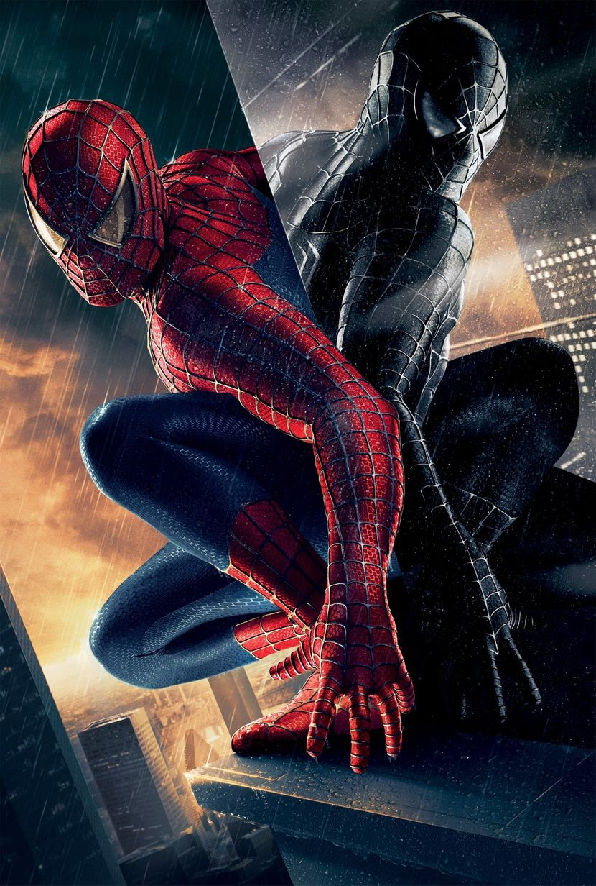
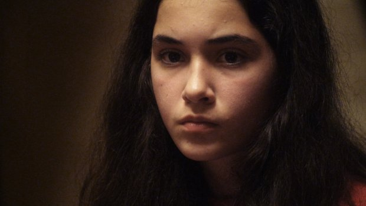
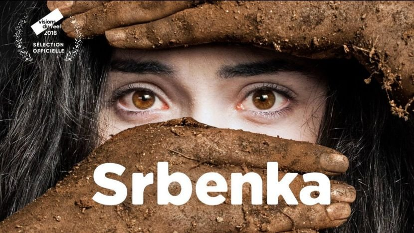
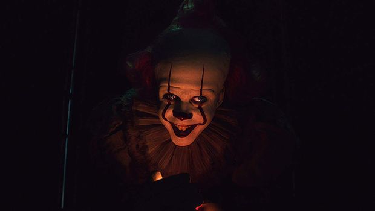
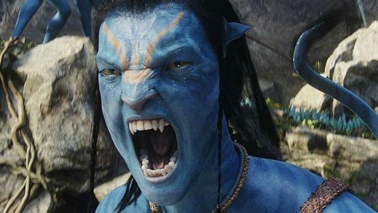
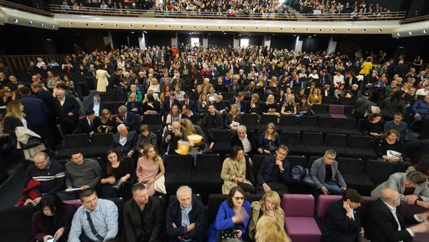
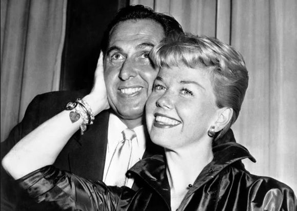
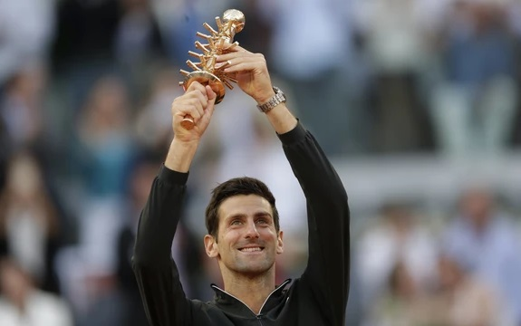

Pažnja, spojleri: Zbog nove epizode "Igre prestola" fanovi u suzama. Tormund ti to nikada ne bi uradio, Velika ženo
Nećemo vam otkriti najvažnije detalje, samo onaj koji je slomio jedno srce na ekranu i, sudeći po reakcijama na društvenim mrežama, hiljade srca ispred njega.
Uprkos epskoj bici u "Dugoj noći", 4. epizoda osme sezone, nazvana "Poslednji Starkovi", ličila je više na "Igru prestola" nego išta što smo videli od početka emitovanja poslednjeg serijala. Servirala nam je sahranu za predjelo, ljubav, seks i politiku kao glavno jelo, izdaju u najavi za dezert i jednu ludu kraljicu za poneti. I smrt dva važna lika.
Nećemo vam otkriti najvažnije detalje, ali ko nije gledao epizodu može ovde da stane, jer sledi spojler spojlera: snimci koji su u nedelju veče procurili na društvenim mrežama jesu bili iz 4. epizode "Igre prestola", koliko god da su se fanovi nadali u suprotno. Dva lika su umrla, a još dva vrlo draga najavila da ih više nećemo videti. Nove smrti su glavna tema na društvenim mrežama (bežite sa njih dok ne odgledate epizodu), ali rame uz rame tu ide i bes fanova što je Brijena plakala.
O da, suze gospe od Oporja, novopečenog viteza od Sedam kraljevstava, pogodile su gledaoce koliko i sva ostala radnja zajedno. Žao nam je, ali iz ljubavnog trougla Kraljeubica-Velika žena- Džinoubica istisnuto je odojče diva. Brijena je izgubila nevinost, a Džejmijeva rečenica: "Nikad nisam spavao sa vitezom" aktivirala je fanove.

Preminuo tvorac "Spajdermena": Želeo da mu na nadrgobnoj ploči piše "konačno zaplet"
Sardžent je umro u svojoj 92. godini života u svojoj kući u Sijetlu. Radio je i na filmu "Zvezda je rođena"
Preminuo je Alvin Sardžent, scenarista i dobitnik Oskara.
Sardžent je umro u svojoj 92. godini života u svojoj kući u Sijetlu, a vest o njegovoj smrti saopštio je producent i prijatelj Pam Vilijams.
Tokom devedestih, Sardžent je napisao scenario za drugi i treći nastavak filma Spajdermen u kome je glumio Tobi Magvajer. 2012. prilagodio je scenario koji je zasnovan na Marvelovom stripu o superheroju Spajdermenu. Naslovnu ulogu je tumačio Endru Garfild. Dobijao je mnoga priznanja, a kolege su govorile da je on i njegov rad od "majstorske klase - savšršenih tonova, besprekorno struktuirani, duhoviti, ljudski , vredni ponovnog gledanja".
Sardžent je radio i na filmu "Zvezda je rođena" i mnogih drugim.
Oprobao se i u glumi i imao malu ulogu u ratnom filmu iz 1953.
Imao je dve kćeri, ženio se dva puta.
Među citatima koji se pripisuju Sardžentu je o onaj: -Kad umrem, neka na nadgrobnoj ploči piše "konačno zaplet" .
Kako je Ivo Andrić govorio o ženskom brbljanju: To su razgovori puni zmijskog siktanja, uspijanja, a žene su kratke pameti i suva srca
Nobelovac Ivo Andrić objavio je 1976. godine knjigu "Znakovi pored puta", u kojoj je jedan deo posvetio opisu ženskih razgovora. On zvuk tog čavrljanja poredi i sa palacanjem zmijskih jezika.
"Slušam kako četiri žene srednjih godina “razgovaraju“, ne slušajući jedna drugu, ne misleći ni na šta na svetu do na prvu iduću reč koju treba da izgovore, a tim rečima nema kraja ni računa. U stvari, one više pevaju nego što govore, i to sve četiri u jedan glas, kao derviši opijeni sopstvenim dahtanjem i halakanjem.
Taj razgovor se kreće na niskom planu malih ogovaranja, suludih nerazumevanja, prozirnih aluzija, i pun je zmijskog siktanja, zagrcavanja, podmitivanja i uspijanja. Četiri stara i bolesna, sobnim vazduhom otrovana papagaja.
Možda u silnoj potrebi ovakvih žena za brbljanjem ima - pored kratke pameti i suva srca - nekih ostataka neiživljene erotike. Možda je to (teško njima!) davno ugušen kliktaj devojaštva, ljubavna pesma koju nikad nisu mogle, smele ni umele da zapevaju, i koja sada navire iz njih, ali kao jadna karikatura onoga što je nekad htela da bude, u vidu besmislenog, čudovišnog brbljanja."

Šta je identitet i gde su granice naših identiteta, u kojoj meri je identitet naš izbor, ono na čemu radimo, što menjamo i prilagođavamo, ono u čemu uživamo i nosimo neprimento i čvrsto, a u kojoj meri je identitet ono što nam se nameće?
Šta je identitet i gde su granice naših identiteta, u kojoj meri je identitet naš izbor, ono na čemu radimo,
što menjamo i prilagođavamo, ono u čemu uživamo i nosimo neprimetno i čvrsto?
Tokom ovogodišnje Turneje filmskog festivala Slobodna Zona, od sredine aprila do kraja juna,
u preko 50 gradova i mesta u Srbiji potpuno besplatno prikazuju se najbolji filmovi sa 14. izdanja festivala,
a 15. i 17. maja u Nišu i Subotici, nakon projekcija filma Srbenka biće organizovan govorni program Kompas
Slobodne zone.
Tema govornog Kompas programa pod nazivom Identiteti koji bude nemir inspirisana je višestruko nagrađivanim
dokumentarnim filmom Srbenka reditelja Nebojše Slijepčevića, koji se osvrće na događaj kada je 1991. u centru
Zagreba ubijena dvanaestogodišnja devojčica srpske nacionalnosti. Generaciju kasnije kontroverzni reditelj
Oliver Frljić postavlja pozorišnu predstavu o slučaju Aleksandre Zec u riječkom HNK. Naslovnu ulogu, igrom
slučaja ili ne, u predstavi dobija Nina – dvanaestogodišnja glumica iz Rijeke srpskog porekla, koja ujedno
postaje i glavna protagonistkinja Slijepčevićevog dokumentarca.
O tome šta je identitet i gde su granice naših identiteta, u kojoj meri je identitet naš izbor, ono na čemu
radimo, što menjamo i prilagođavamo, ono u čemu uživamo i nosimo neprimento i čvrsto, a u kojoj meri je
identitet ono što nam se nameće, poput etničkih identiteta koji nas zatvaraju u bodljikave žice neslobode
ili rodnih identiteta koji nam propisuju sudbinu nezavsno od naše volje, na razgovoru nakon filma u Niškom
kulturnom centru, u sredu 15. maja od 18h časova govoriće filozofkinje Milica Rašić i Sara Ilić i filozof
Bojan Blagojević.

U petak 17. maja na ista pitanja u Bioskopu Eurocinema Subotica od 18.30h
pokušaće da odgovore teoretičarka kulture Aleksandra Bosnić Đurić, bibliotekar
dragan Rokvić, pisac Boško Krstić i pisac i prevodilac Oto Tolnaj.
Razgovore u oba grada moderiraće urednik govornog programa Kompas filmskog festivala Slobodna zona Ivan Milenković.
Kompas se u okviru 13. Turneje filmskog festivala Slobodna zona organizuje uz podršku Grupe 484, a u partnerstvu
sa Odborom za ljudska prava Niš i Otvorenim univerzitetom Subotica.
Pored filma Srbenka, na repertoaru Turneje nalaze se i filmovi Bergman – godina života, Leto, Kapetan,
Tri Lica, Najbolji ortaci i Tranzit.
Program Turneje i raspored projekcija po gradovima dostupan je na sajtu freezonebelgrade.org.

Trejler za horor film "To: poglavlje 2" je objavljen i zastrašujuć: Jezivi klovn je ponovo u gradu
Nakon skoro dve godine horor koji je stvarno uspeo da zaplaši gledaoce dobija svoj nastavak.
Trejler za nastavak horor filma "To: poglavlje 2" (It: Chapter Two) objavljen je u petak popodne,
a samo je ta najava bila dovoljna da se gledaoci naježe.
U najavi vidimo sada odraslu Beverli, koju igra Džesika Čestejn (Molina igra, Interstelar),
kako se vraća kući u kojoj je odrasla, samo da bi saznala da tu živi jedna od onih čudnih bakica
od koje sve prolaze žmarci.Običan razgovor veoma brzo postane napet i nelagodan. Drama eskalira
kada jeziva bakica ode po kolače (jer jezive bake uvek imaju kolače u rerni), a Beverli primeti
poznato lice iz cirkusa kako je gleda sa požutele slike.
"I bakica je niko drugi nego" - Penivajz.
Nakon te scene, slede isečci iz filma u kojima vidimo kako članovi "Kluba gubitnika" izgledaju
nakon 27 godina od radnje prvog dela "To". Odraslog Bilija glumi Džejms Mekavoj
(Podeljen, X-men:Apokalipsa), Majka - Isaija Mustafa (Klinika), a Ričija - Bil Heder
(Subotom veče uživo).

Odlaže se dolazak novog "Avatara", fanovi razočarani: Ukupno 8 godina čekaćemo na izlazak svih delova
Kameronov "Avatar" i danas drži rekord za prihode od prodatih karata.Kompanija "Volt Dizni" objavila je danas da
planira u narednih osam godina da snimi nastavak "Avatara", novi serijal "Ratova zvezda" i adaptaciju Steven Spilberga "Priča sa zapadne strane".
"Avatar 2" Džejmsa Kamerona naći će se u bioskopima 17. decembra 2021. godine.
Dizni navodi da će se treći deo pojaviti u bioskopima 2023, četvrti 2025. i peti 2027. godine,
preneo je AP.
Kameronov "Avatar" i danas drži rekord za prihode od prodatih karata (2,79 milijardi dolara),
mada preti da ga nadmaši film "Avengers: Endgame".
Kompanija je najavila i da će se tri nastavka "Ratova zvezda" pojaviti u bioskopima 2022, 2024.
i 2026. godine.
"Priča sa zapadne strane" Stivena Spilberga naći će se u bisokopima 18. decembra 2020, a "Kruela" 23. decembra iste godine.
Dizni je za leto pripremio niz blokbastera uključujući "Aladina", "Priču o igračkama 4" i "Kralja lavova".
Ove najave znače da će Dizni vladati bioskopskim salama narednih devet sezona za Božić ili sa filmom iz sage "Avatar"
ili "Ratova zvezda" izuzev jedne godine 2020. Za decembar 2020. kompanija je planirala izlazak filma "Priča sa zapadne
strane" (West Side Story) Stivena Spilberga.

Ceo dan u bioskopu, samo za jedan film: 496 minuta trajaće projekcija "Mrtvih duša" u Kinoteci
U provinciji Gansu na severozapadu Kine leže ostaci brojnih zatvorenika,
koji su proglašeni za ultradesničare u kampanji komunista i umirali od gladi u logorima.
Dokumentarac "Mrtve duše", najduži film u dosadašnjoj istoriji Međunarodnog festivala dokumentarnog filma Beldoks u Beogradu, biće prikazan u nedelju, 12. maja, u 12 sati u Jugoslovenskoj kinoteci,
najavili su organizatori.
Delo nastalo u francusko-švajcarsko-kineskoj koprodukciji režirao je Vang Bing, a traje 496 minuta (osam sati i 16 minuta).
U provinciji Gansu na severozapadu Kine leže ostaci brojnih zatvorenika napuštenih u pustinji Gobi pre 60 godina.
Proglašeni za ultradesničare u kampanji Komunističke partije 1957. godine protiv desnice, oni su umrli od gladi u logorima Jiabiangou
i Mingšui. Film poziva gledaoce da se sretnu s preživelima iz logora kako bi iz prve ruke saznali ko su ti ljudi, kakve teške
trenutke su bili primorani da izdrže i kakva je bila njihova sudbina. Film se prikazuje u programu "Meteori", selekciji hibridnih,
igrano-dokumentarnih i arthaus filmova, koji je pokrenut prošle godine u Muzeju savremene umetnosti (MSU) u Beogradu kao jedna od novih
selekcija festivala. Ideja je da se publici približe drugačija shvatanja o filmu, kroz raznolike načine produkcije i
nastanka audio-vizuelnih dela.
Program je nastao po uzoru na saradnje između muzeja i festivala kao sto su: Forum i Forum Expanded na Berlinalu, FID Marsej - MSU u Marseju, Film Society Of Lincoln Center u MoMi u Njujorku i Cinema du reel u Centre Pompidou u Parizu.
Doris Dej, čuvena holivudska zvezda, preminula je u 97-godini, preneo je AP.
Glumica je umrla u svom domu u Karmel Voliju u Kaliforniji od komplikacija nastalih zbog upale pluća, okružena najbližim prijateljima, prenosi AP.
Kako je Fondacija saopštila, Doris Dej je bila odličnog psihofizičkog stanja za svoje godine, dok nije nedavno dobila veoma ozbiljnu upalu pluća.
Pevačica i glumica igrala je u skoro 40 filmova i važila za jednu od najvećih zvezda 60-ih godina.

Muzičku karijeru je započela 1939. kao članica velikog benda, a njena popularnost je počela da raste sa prvim hit singlom "Sentimental Journey" iz 1945. godine.
Nakon što je napustila bend Lesa Brauna, Dej je započela solo karijeru.
U periodu između 1947. i 1967, koliko je trajao ugovor, snimila je preko 650 pesama za ovu diskografsku kuću i time
postala jedna od najpopularnijih pevačica 20. veka.
Godine 1948. dobila je prvu filmsku ulogu u muzičkoj komediji "Romansa na otvorenom moru".
Nastupila je u ukupno 39 filmova tokom svoje karijere. Bila je nominovana za nagradu Oskar za ulogu u filmu "Šaputanje na jastuku" iz 1959. i dobitnica je Nagrade Sesil B. Demil za životno delo.
Sport NOVO

KONKURENCIJO, SANJAJ O OVOME!
Đoković pobegao rivalima, Nadal i Federer mogu da ga prestignu SAMO ZAJEDNO!
KONKURENCIJO, SANJAJ O OVOME!
Novak Đoković je na furiozan način došao do titule na mastersu u Madridu. Naš as nije izgubio nijedan set.
Osvajanje 33. trofeja na turnirima iz 1000 serije omogućilo mu je da dodatno poveća bodovnu prednost na ATP lisi u
odnosu na drugoplasiranog Rafaela Nadala.
Najbolji teniser sveta sada ima 12.115 bodova, a Španac 7.945. To znači da njih dvojicu sada deli čak 4.170 ATP bodova,
a prošle nedelje bili su udaljeni 3.395. Nadal jeste uvećao svoj bilans za 180 bodova, ali mu je Đoković mnogo odmakao jer
je kao šampion osvojio hiljadu, a kako je "branio" samo 45, uvećao je svoj saldo za 955.
Trećeplasirani Rodžer Federer (5.770) samo zajedno sa Nadalom može da pretekne Đokovića - Švajcarac i Španac ukupno imaju 13.715 bodova,
a Nole pomenutih 12.115.
Velikih promena u vrhu nije bilo, osim što je na sedmo mesto došao finalista Madrida Stefanos Cicipas i to mu je ujedno najbolji
plasman u karijeri.
Što se ostalih naših tenisera tiče, u Top 100 su još četvorica. Dušan Lajović je nazadaovao sedam mesta,
pa je sada 31. na ATP listi sa 1.316 poena, Laslo Đere je zadržao isti plasman (32.),
dok je Filip Krajinović napredovao pet pozicija, i nalazi se na 69. mestu.
U elitnom društvu je i Miomir Kecmanović koji je 84. na svetu.